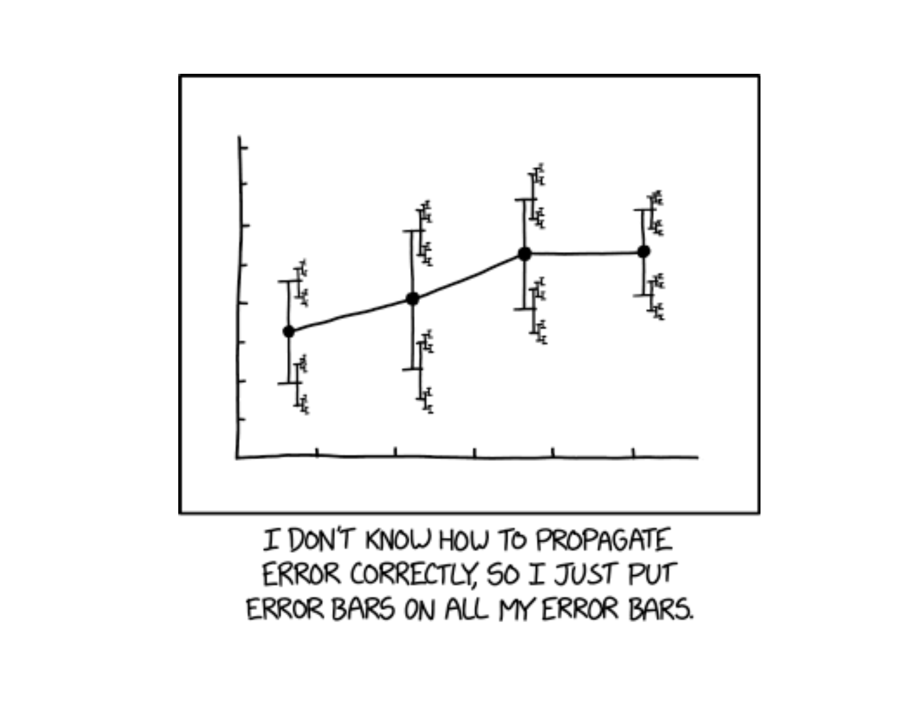
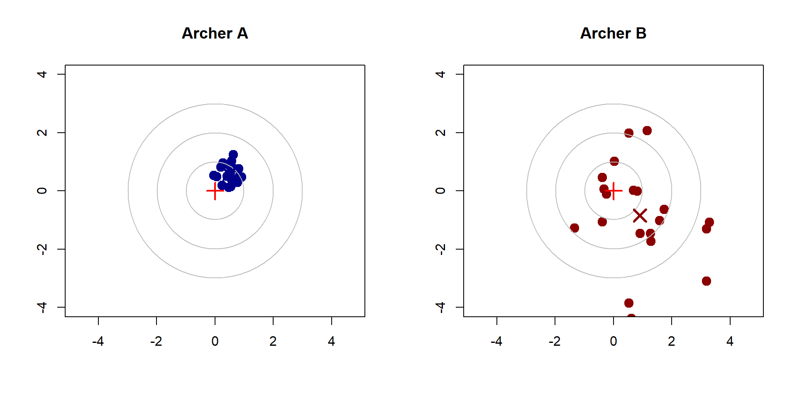
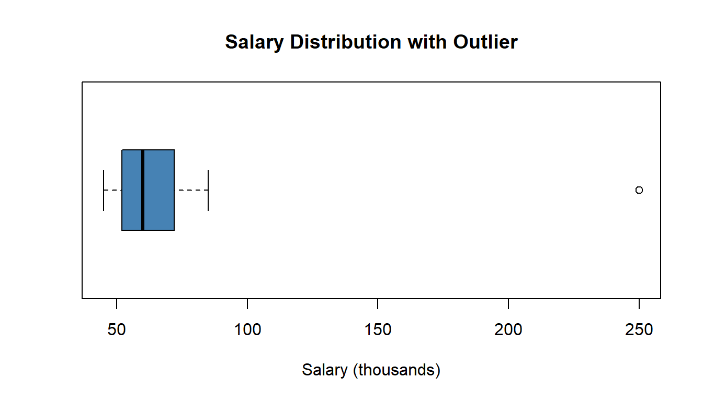
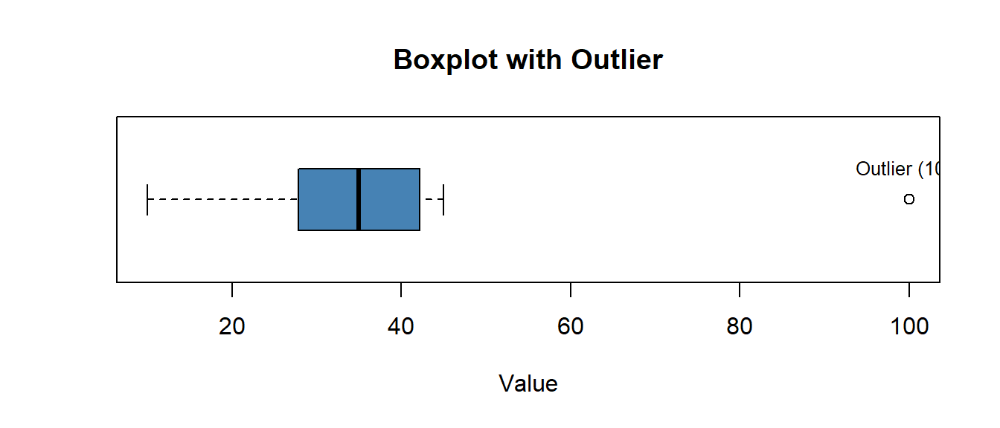

Lesson 4: Measures of Variability
Reese

DMath Volleyball!!
Math vs AWPAD
NotePreviously 7-0
8-0
Math vs AWPAD
NotePreviously 8-0
8-1
Go To Vantage
ImportantVantage
Let’s go to Vantage and see if things are working.
Lesson 3 Review
Measures of Center
Last lesson we learned three ways to measure the “center” of a distribution:
| Measure | Formula | Resistant? | Best For |
|---|---|---|---|
| Mean | \(\bar{x} = \frac{\sum x_i}{n}\) | No | Symmetric data |
| Median | Middle value | Yes | Skewed data/outliers |
| Mode | Most frequent | Yes | Categorical data |
We also learned about percentiles, quartiles, and the five-number summary.
TipKey Insight from Lesson 3
Two datasets can have the same mean and median but look very different! Today we learn how to quantify that difference.
Lesson 4 Content
Objectives
- Calculate and interpret range and inter-quartile range (IQR)
- Calculate and interpret variance and standard deviation
Required Reading
Devore, Section 1.4: Measures of Variability
Why Measure Variability?
The Problem with Center Alone
Consider two archery targets:

Both archers might have similar average positions, but Archer A is clearly more consistent. We need measures of spread or variability to capture this difference.
The Range
The range is the simplest measure of spread:
\[ \text{Range} = \text{Maximum} - \text{Minimum} \]
Quiz scores: 72, 75, 78, 80, 82, 85, 88 Maximum: 88 Minimum: 72 Range: 16 pointsProblems with the range:
- Uses only 2 data points (ignores everything in between)
- Very sensitive to outliers
- Tends to increase with sample size
The Interquartile Range (IQR)
The interquartile range (IQR) measures the spread of the middle 50% of the data:
\[ \text{IQR} = Q_3 - Q_1 \]
Quiz scores: 72, 75, 78, 80, 82, 85, 88 Q1 (25th percentile): 76.5 Q3 (75th percentile): 83.5 IQR: 7 pointsAdvantages of IQR:
- Resistant to outliers (uses quartiles, not extremes)
- Focuses on the “typical” spread of the data
- Useful for identifying outliers (1.5 × IQR rule)
The 1.5 × IQR Rule for Outliers
An observation is a potential outlier if it falls:
- Below \(Q_1 - 1.5 \times \text{IQR}\), or
- Above \(Q_3 + 1.5 \times \text{IQR}\)
Salaries (thousands): 45, 48, 52, 55, 58, 62, 68, 72, 85, 250 Q1: 52.75 Q3: 71 IQR: 18.25 Lower fence: 25.375 Upper fence: 98.375 Outliers: 250 
NoteNote
The boxplot automatically shows values beyond 1.5 × IQR as individual points.
Variance and Standard Deviation
To measure spread, we want to know how far observations are from the center. The deviation of observation \(x_i\) from the mean is:
\[ x_i - \bar{x} \]
Problem: If we sum all deviations, they always equal zero!
Data: 2, 4, 6, 8, 10 Mean: 6 Deviations: -4, -2, 0, 2, 4 Sum of deviations: 0 Solution: Square the deviations before summing!
The Sample Variance
The sample variance (\(s^2\)) is the average of the squared deviations (with a small adjustment):
\[ s^2 = \frac{1}{n-1} \sum_{i=1}^{n} (x_i - \bar{x})^2 \]
WarningWhy n-1?
We divide by \(n-1\) instead of \(n\) because we lose one “degree of freedom” when we estimate the mean from the same data. This gives us an unbiased estimate of the population variance. We’ll discuss this more when we cover inference.
Computing the Sample Variance
Step-by-step method:
- Calculate the mean \(\bar{x}\)
- Subtract the mean from each value: \((x_i - \bar{x})\)
- Square each deviation: \((x_i - \bar{x})^2\)
- Sum the squared deviations: \(\sum(x_i - \bar{x})^2\)
- Divide by \(n-1\)
Example: Calculating Variance
Data: 4, 7, 5, 9, 10 Step 1 - Mean: 7 Step 2-3 - Deviations and Squared Deviations:x_i (x_i - x̄) (x_i - x̄)² --------------------------------------------------4 -3.0 9.00
7 0.0 0.00
5 -2.0 4.00
9 2.0 4.00
10 3.0 9.00 --------------------------------------------------
Step 4 - Sum of squared deviations: 26 Step 5 - Variance (s²): 26 / 4 = 6.5 The Sample Standard Deviation
The sample standard deviation (\(s\)) is the square root of the variance:
\[ s = \sqrt{s^2} = \sqrt{\frac{1}{n-1} \sum_{i=1}^{n} (x_i - \bar{x})^2} \]
Data: 4, 7, 5, 9, 10 Variance (s²): 6.5 Standard Deviation (s): 2.55 Why take the square root?
- The variance is in squared units (e.g., dollars², inches²)
- The standard deviation is in the original units (e.g., dollars, inches)
- This makes interpretation much easier!
Interpreting Standard Deviation
The standard deviation tells us roughly how far a typical observation is from the mean.

Mean: 70.92 Standard Deviation: 4.56 Most scores fall between 66.4 and 75.5 Properties of Standard Deviation
| Property | Description |
|---|---|
| Always non-negative | \(s \geq 0\), equals 0 only when all values are identical |
| Same units as data | Unlike variance, which is in squared units |
| Sensitive to outliers | Like the mean, outliers inflate \(s\) |
| Useful benchmarks | For bell-shaped data: ~68% within 1 SD, ~95% within 2 SD |
Comparing Measures of Spread
Summary Table
| Measure | Formula | Resistant? | Uses All Data? |
|---|---|---|---|
| Range | Max - Min | No | No (only 2 points) |
| IQR | \(Q_3 - Q_1\) | Yes | No (only quartiles) |
| Variance | \(s^2 = \frac{\sum(x_i-\bar{x})^2}{n-1}\) | No | Yes |
| Std Dev | \(s = \sqrt{s^2}\) | No | Yes |
Which Measure to Use?
| Situation | Recommended Measure |
|---|---|
| Quick summary | Range (but note its limitations) |
| Data with outliers | IQR |
| Identifying outliers | 1.5 × IQR rule |
| General purpose | Standard deviation |
| Statistical inference | Variance/Standard deviation |
TipRule of Thumb
Report IQR when you report the median; report standard deviation when you report the mean.
Practice Problems
Problem 1
The following data represents the number of hours cadets slept last night:
5, 6, 6, 7, 7, 7, 8, 8, 9
NoteQuestions
- Calculate the range
- Calculate the IQR
- Calculate the variance and standard deviation
- Are there any outliers using the 1.5 × IQR rule?
TipAnswers
Range = 9 - 5 = 4 hours
IQR calculation:
- Ordered: 5, 6, 6, 7, 7, 7, 8, 8, 9
- Q1 = 6, Q3 = 8
- IQR = 8 - 6 = 2 hours
Variance and SD:
- Mean = (5+6+6+7+7+7+8+8+9)/9 = 63/9 = 7
- Deviations: -2, -1, -1, 0, 0, 0, 1, 1, 2
- Squared: 4, 1, 1, 0, 0, 0, 1, 1, 4
- Sum = 12
- Variance = 12/8 = 1.5 hours²
- Standard deviation = √1.5 = 1.22 hours
Outlier check:
- Lower fence = Q1 - 1.5(IQR) = 6 - 1.5(2) = 3
- Upper fence = Q3 + 1.5(IQR) = 8 + 1.5(2) = 11
- All values between 3 and 11, so no outliers
Problem 2
Two PT instructors recorded 2-mile run times (in minutes) for their sections:
Section A: 14, 15, 15, 16, 16, 16, 17, 17, 18 Section B: 12, 13, 16, 16, 16, 16, 19, 20, 20
NoteQuestions
- Calculate the mean for each section
- Calculate the standard deviation for each section
- Which section is more consistent? How do you know?
TipAnswers
Section A: Mean: 16 minutes SD: 1.22 minutesSection B: Mean: 16.44 minutes SD: 2.83 minutesBoth sections have a mean of approximately 16 minutes
Section A: SD ≈ 1.22 minutes Section B: SD ≈ 2.92 minutes
Section A is more consistent because it has a smaller standard deviation. Even though both sections have the same average run time, Section A’s times are clustered more tightly around the mean.
Problem 3
A dataset has the following five-number summary: - Min = 10 - Q1 = 25 - Median = 35 - Q3 = 45 - Max = 100
NoteQuestions
- Calculate the IQR
- Determine the outlier fences
- Is the maximum value (100) an outlier?
- Sketch what the boxplot would look like
TipAnswers
IQR = Q3 - Q1 = 45 - 25 = 20
Outlier fences:
- Lower fence = Q1 - 1.5(IQR) = 25 - 1.5(20) = 25 - 30 = -5
- Upper fence = Q3 + 1.5(IQR) = 45 + 1.5(20) = 45 + 30 = 75
Yes, 100 is an outlier because it exceeds the upper fence of 75
Boxplot sketch:

Summary
Key Takeaways
- Range: Max - Min; simple but sensitive to outliers
- IQR: Q3 - Q1; resistant to outliers, measures middle 50%
- 1.5 × IQR Rule: Values beyond \(Q_1 - 1.5 \times \text{IQR}\) or \(Q_3 + 1.5 \times \text{IQR}\) are potential outliers
- Variance (\(s^2\)): Average squared deviation from the mean
- Standard Deviation (\(s\)): Square root of variance; in original units
ImportantRemember
- Report IQR with the median (for skewed data or outliers)
- Report standard deviation with the mean (for symmetric data)
- Standard deviation ≈ “typical distance from the mean”
Before You Leave
Today
- Range and IQR as simple measures of spread
- The 1.5 × IQR rule for identifying outliers
- Variance and standard deviation as comprehensive measures
- When to use each measure of variability
Any questions?
Next Lesson
Lesson 5: Exploratory Data Analysis Lab
- Execute EDA using appropriate graphs and summaries
- Justify choices of displays for variable types
- Communicate findings with clear, concise annotations
Upcoming Graded Events
- WebAssign 1.4 - Due before Lesson 5
- Exploratory Data Analysis - Due Lesson 9
- WPR I - Lesson 16